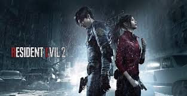
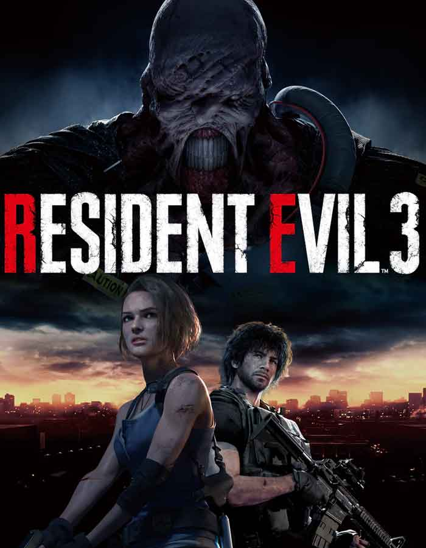
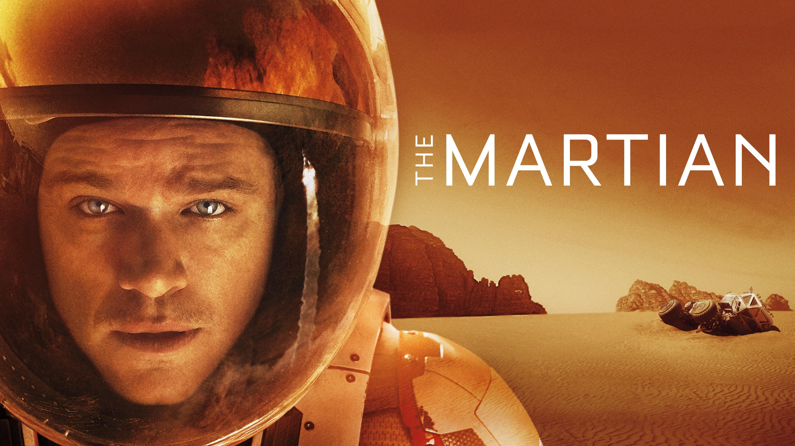
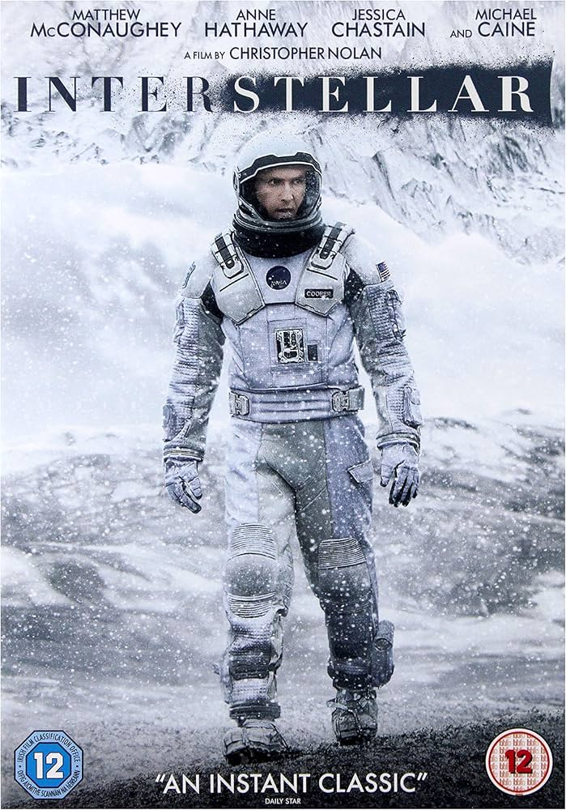

Resident Evil 2, Capcom tarafından geliştirilen ve yayınlanan bir video oyunudur. Oyun, Resident Evil serisinin ikinci ana oyunudur ve ilk olarak 1998 yılında PlayStation için piyasaya sürülmüştür. Oyun, Raccoon City'deki zombi kıyametinin ortasında hayatta kalmaya çalışan Leon S. Kennedy ve Claire Redfield adlı karakterlerin hikayesini anlatır. Oyuncular, bu karakterlerin perspektifinden oyunu deneyimleyeceklerdir.
Oyunlar


Resident Evil 3, Capcom tarafından geliştirilen ve yayınlanan bir video oyunudur. Oyun, Resident Evil serisinin üçüncü ana oyunudur ve ilk olarak 1999 yılında PlayStation için piyasaya sürülmüştür. Oyun, Jill Valentine adlı karakterin, Raccoon City'deki olaylardan kaçışını konu alır. Oyuncular, Jill'in hayatta kalma mücadelesini ve Nemesis adlı düşmanla olan çatışmalarını deneyimleyeceklerdir.

Resident Evil 7: Biohazard, Capcom tarafından geliştirilen ve yayınlanan bir video oyunudur. Oyun, Resident Evil serisinin yedinci ana oyunudur ve ilk olarak 2017 yılında PlayStation 4, Xbox One ve Microsoft Windows için piyasaya sürülmüştür. Oyun, Ethan Winters adlı karakterin, kaybolan karısını bulmak için Louisiana'daki terkedilmiş bir malikaneye girmesini konu alır. Oyuncular, bu korkutucu ortamda hayatta kalmaya çalışırken çeşitli bulmacaları çözmek zorundadırlar.

Resident Evil Village, Capcom tarafından geliştirilen ve yayınlanan bir video oyunudur. Oyun, Resident Evil serisinin sekizinci ana oyunudur ve ilk olarak 2021 yılında PlayStation 4, PlayStation 5, Xbox One, Xbox Series X/S ve Microsoft Windows için piyasaya sürülmüştür. Oyun, Ethan Winters'ın karısı Mia'nın kaybolmasının ardından yaşanan olayları konu alır. Oyuncular, Ethan'ın, gizemli bir köydeki yaratıklarla dolu bir dünyada hayatta kalmaya çalışmasını deneyimleyeceklerdir.
Filmler

The Martian, Andy Weir'in aynı adlı romanından uyarlanan bir bilim kurgu filmidir. Film, Ridley Scott tarafından yönetilmiş ve 2015 yılında vizyona girmiştir. Başrolde Matt Damon'un canlandırdığı Mark Watney, Mars'ta mahsur kalan bir astronotun hayatta kalma mücadelesini konu alır. Film, bilimsel gerçeklere dayalı olarak, uzay araştırmaları ve insan dayanıklılığı temalarını işler.

Interstellar, Christopher Nolan tarafından yazılıp yönetilen bir bilim kurgu filmidir. Film, 2014 yılında vizyona girmiştir ve uzay yolculuğu, zaman ve insanlığın geleceği gibi temaları işler. Başrolde Matthew McConaughey'in canlandırdığı Cooper, insanlığın hayatta kalması için yeni bir gezegen arayışına çıkan bir pilotu canlandırır. Film, görsel efektleri ve derin temalarıyla dikkat çekmiştir.
Diziler

The 100, Kass Morgan'ın aynı adlı roman serisine dayanan bir bilim kurgu dizisidir. Dizi, 2014 yılında CW kanalında yayınlanmaya başlamıştır. Hikaye, nükleer felaketten sonra hayatta kalan insanların uzayda yaşayan bir grup gençle birlikte Dünya'ya dönüşünü konu alır. Dizi, hayatta kalma, insan ilişkileri ve toplum yapısı gibi temaları işler.

The Walking Dead, Robert Kirkman'ın aynı adlı çizgi roman serisine dayanan bir korku dizisidir. Dizi, 2010 yılında AMC kanalında yayınlanmaya başlamıştır. Hikaye, zombi kıyametinin ardından hayatta kalan insanların mücadelesini konu alır. Dizi, karakter gelişimi ve insan ilişkileri üzerine yoğunlaşırken, korku unsurlarını da barındırır.